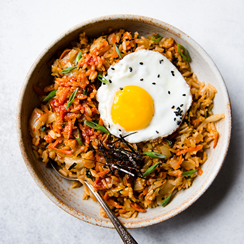

My Favorite Food
Kimchi Fried Rice

Ingredients
- Kimchi
- Rice
- Spam
- Soy Sauce
- Sesame Oil
- Seaweed
- Sesame Seeds
Directions
- Heat up the pan
- Cook the spam til its got golden brown edges
- Toss in the kimchi and add in some kimchi juice
- Put in the rice and mix it all together
- While mixing, add in soy sauce and sesame oil
- Shred up some seaweed sprinkle it on top with sesame seeds
- Finally, fry an egg and put it on top of your fried rice!
For more info, check out this site